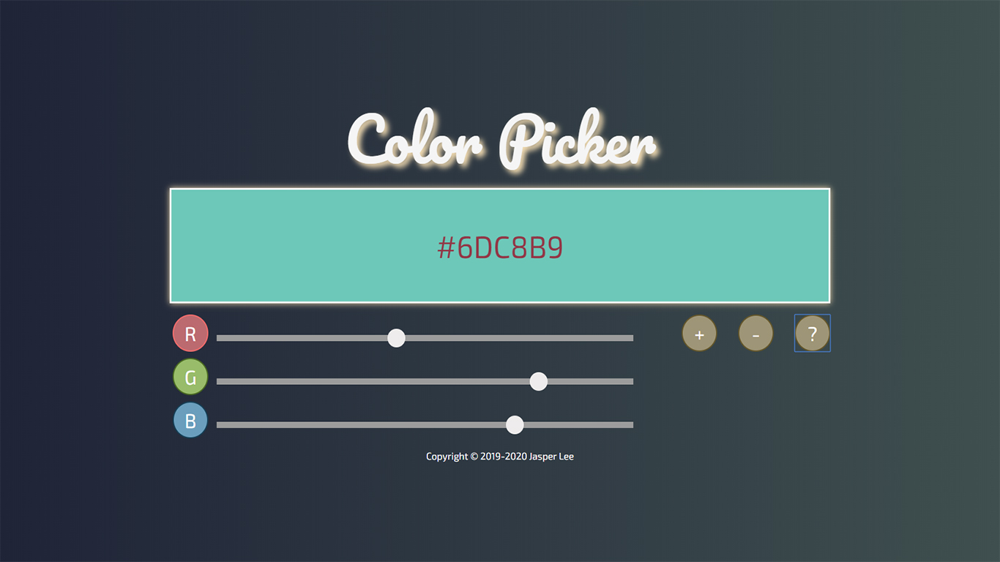

Experience 經歷
-
勞動部泰山職業訓練場 | 前端網頁開發技術班
October 2019 - Januery 2020
為期三個半月的時間學習前端的HTML、CSS、JavaScript、JQuery、Ajax、Bootstrap；後端的PHP、MySQL以及視覺設計的Photoshop、Illustartor。

-
中興保全科技股份有限公司 | 資訊工程員
April 2017 - August 2019
1.資訊系統維護：問題追蹤管理、需求訪談.介面規劃及系統測試。
2.教育訓練規劃：系統教育訓練文件撰寫.安排及執行。
3.專案管理：協助新專案管理及政府機關標案資料的撰寫與執行。
4.新系統及業務評估：了解現階段的系統需求並尋找可用資源。
5.辦公室資訊相關問題協助。
Education 學歷
-
聖約翰科技大學 | 資訊工程系
Feburary 2014 - June 2016
-
中華科技大學 | 資訊工程系
August 2012 - Feburary 2014
-
國立淡水高級商工職業學校 | 電機科
August 2009 - June 2012

Skill 技能
Fronted 前端技術
Backend 後端技術
Design 視覺設計
Certificate 證照
Portfolio 作品集

JS > color picker
使用JavaScript開發出調色盤，並可透過手動輸入或Slide Bar選取數值及隨機選色功能。

JQ > Open-Data介接
透過JQuery的getJSON抓取中央氣象局的未來36小時天氣資料。